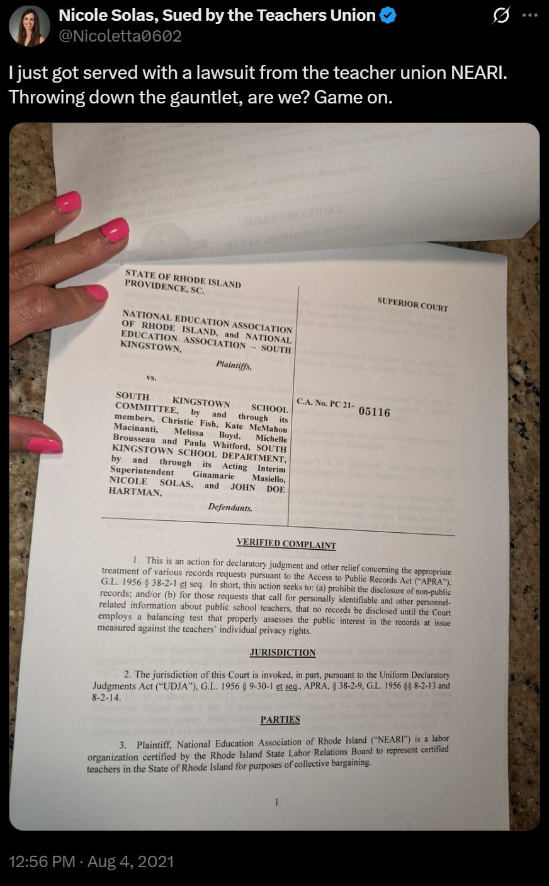
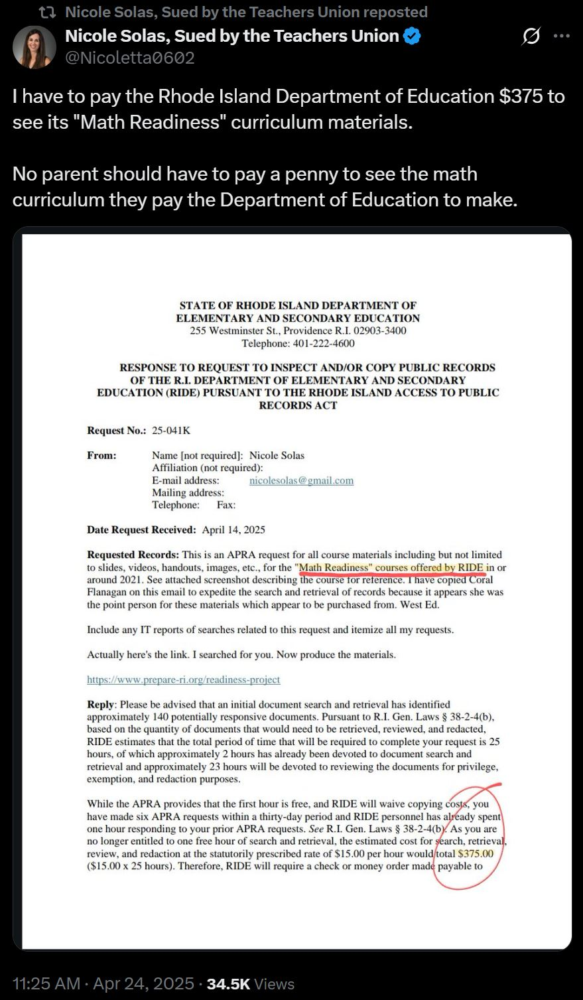
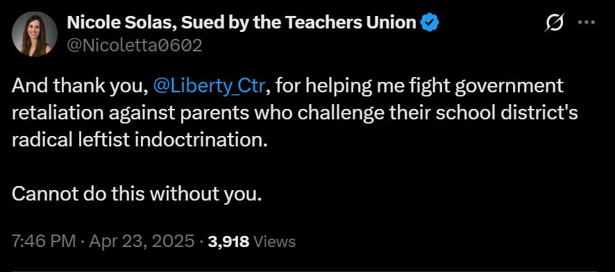

Corruption in Teachers Unions
⚠️Be aware of federal and state teachers unions
- Calling for a ceasefire in Gaza
- Support for males playing female sports, and opposition to state efforts to prohibit transgender surgery for minors
- Declaring a “climate emergency” and support for Green New Deal
- LGBTQ+🏳️🌈
- Restrictions on gun owners rights
- Efforts to normalize illegal immigration
- Support for new federal election laws
- LGBTQ+🏳️🌈
- “I know you’ve taken it in the teeth out there, but the first guy through the wall — he always gets bloody. Always. It’s the threat of not just the way of doing business, but in their minds, it’s threatening the game. But really what it’s threatening is their livelihoods.It’s threatening their jobs. It’s threatening the way that they do things. And every time that happens, whether it’s the government or a way of doing business or whatever it is, the people who are holding the reins — have their hands on the switch — they go batshit crazy. Anyone who is not tearing their team right now and rebuilding it, using your model, they’re dinosaurs” — Boston Red Sox owner John Henry from the movie Moneyball.   
| Name | Members | Revenue 2019-2023 | Political Contributions 2019-2023 | % Political Contributions Donated to Democrats |
|---|---|---|---|---|
| American Federation of Teachers (AFT) | 1.7 Million | $1.03 Billion | $17.29 Million | 98% |
| National Education Association(NEA) | 3 Million | $1.93 Billion | $48.68 million | 98% |
AFT has supported:
NEA has supported:
| Name | Members | Revenue 2019-2023 | Political Contributions 2019-2023 |
|---|---|---|---|
| California Teachers Association | 310,000 | $1.09 Billion | $42.87 Million |
| Illinois Education Association | 130,000 | $7.7 Million | $8.8 Million |
| California School Employees Association | 250,000 | $408 Million | $4.6 Million |
| Ohio Education Association | 120,000 | $327 Million | $4.6 Million |
| Illinois Federation of Teachers | 103,000 | ? | $8.2 Million |
| New York State United Teachers | 612,000 | 825 Million | $1.3 Million |
Copyright © 2025 - All Rights Reserved. How to Make Liberal Tears.